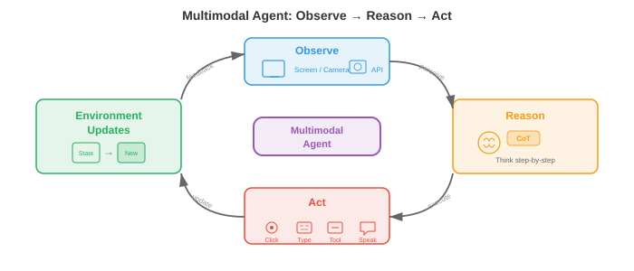

Unified Multimodal Architectures¶
Unified multimodal architectures replace separate specialist models with a single system that reads, reasons, and generates across text, images, audio, and video. This file covers any-to-any models (CoDi, NExT-GPT), natively multimodal LLMs (Gemini, GPT-4o), multimodal tokenisation strategies, and the architectural trade-offs of unification.
The Case for Unification¶
-
Imagine a translator who speaks five languages and can switch between them mid-sentence without pausing. Early multimodal systems were more like five separate translators sitting in different rooms, each handling one language and passing notes through a slot in the wall. A unified multimodal architecture is the single polyglot: one model with shared weights that reads, writes, and reasons across text, images, audio, video, and even actions, all within a single forward pass.
-
The motivation is both practical and theoretical. On the practical side, maintaining separate specialist models for every modality pair (text-to-image, image-to-text, audio-to-text, etc.) leads to a combinatorial explosion: \(k\) modalities require up to \(k(k-1)\) directed pipelines. A unified model collapses all of these into a single system. On the theoretical side, human cognition does not process vision and language in isolated modules; cross-modal binding happens early and deeply, and unification attempts to mirror this.
-
Shared weights encourage transfer across modalities. A transformer that has learned temporal patterns in text (subject before verb, cause before effect) can repurpose those same attention circuits for temporal patterns in video (object appears before it moves) or audio (onset before sustain). This is the multimodal analogue of the transfer learning you saw in Chapter 7 with language model fine-tuning and in Chapter 8 with ImageNet pretraining.
-
Formally, let \(\mathcal{M} = \{m_1, m_2, \ldots, m_k\}\) be a set of modalities. A unified model defines a single parameterised function \(f_\theta\) that maps any subset of input modalities to any subset of output modalities:
- where \(\mathcal{P}(\mathcal{M})\) is the power set (all subsets) of modalities. The key constraint is that \(\theta\) is largely shared; only thin, modality-specific adapter layers differ.

- The promise of unification comes with a fundamental tension: modalities are structurally different. Text is a 1D sequence of discrete tokens. Images are 2D grids of continuous pixel values. Audio is a 1D continuous waveform with a very different temporal scale from text. Video adds a time axis to images. Reconciling these disparate structures into a single sequence that a transformer can digest is the central engineering challenge of this field.
Any-to-Any Models¶
-
Think of a universal remote control that can operate your television, air conditioning, and music system, all through the same interface. Any-to-any models are the AI equivalent: they accept any combination of modalities as input and produce any combination as output.
-
CoDi (Composable Diffusion) achieves any-to-any generation by training modality-specific diffusion models and then aligning their latent spaces through a shared conditioning mechanism. Each modality has its own diffusion process (recall diffusion models from file 04 in this chapter), but the noise prediction networks are conditioned on a joint cross-attention layer that sees embeddings from all input modalities simultaneously. This lets CoDi generate, say, an image and matching audio from a text prompt in a single pass.
-
NExT-GPT takes a different architectural approach. It connects an LLM backbone (the "brain") to modality-specific encoders on the input side and modality-specific decoders on the output side via lightweight projection layers. The input encoders (e.g., an image encoder from CLIP, an audio encoder from CLAP) translate each modality into the LLM's embedding space. The LLM reasons over the combined token sequence and emits special "modality signal tokens" that route information to the appropriate decoder (e.g., Stable Diffusion for images, AudioLDM for audio). Only the projection layers are trained; the LLM and the specialist encoders/decoders are kept frozen.
-
Gemini (Google DeepMind) is natively multimodal from pretraining. Unlike NExT-GPT's plug-and-play approach, Gemini's transformer is trained from scratch on interleaved sequences of text, image, audio, and video tokens. This means cross-modal attention patterns develop organically during pretraining rather than being bolted on afterwards. The model uses the SentencePiece tokeniser for text and learns a visual tokeniser similar to the VQ approaches discussed in file 03 of this chapter.
-
GPT-4o ("o" for "omni") represents yet another pattern: an end-to-end model where all modalities share the same transformer and the same next-token prediction objective. Audio input is processed as spectral tokens, images as patch tokens, and text as subword tokens, all fed into a single sequence. The model generates output tokens that are decoded by modality-specific heads. The key innovation is the low latency enabled by removing the cascade of separate ASR, LLM, and TTS models that earlier systems like GPT-4V relied on.

-
These models sit on a spectrum of integration depth:
- Shallow integration (NExT-GPT): frozen specialists connected by trained adapters. Fast to build, limited cross-modal reasoning.
- Medium integration (CoDi): shared conditioning across modality-specific generators. Better alignment, still modular.
- Deep integration (Gemini, GPT-4o): single model trained end-to-end on all modalities. Richest cross-modal reasoning, most expensive to train.
Modality-Specific Encoders and Decoders with a Shared Backbone¶
-
Picture a factory with a single assembly line (the shared backbone) but different loading docks for raw materials (encoders) and different shipping departments for finished goods (decoders). Each dock is specialised for its cargo, but once inside the factory, everything moves along the same conveyor belt.
-
The dominant architectural pattern for unified models uses this three-part structure:
- Modality encoders \(E_m\) that convert raw input from modality \(m\) into a sequence of embedding vectors \(\mathbf{h}_1^m, \mathbf{h}_2^m, \ldots, \mathbf{h}_{n_m}^m\), each of dimension \(d\).
- A shared transformer backbone \(T_\theta\) that processes the concatenated or interleaved embeddings from all input modalities using self-attention.
- Modality decoders \(D_m\) that convert the backbone's output embeddings back into the native format of modality \(m\) (text tokens, image pixels, audio waveforms).
-
For text, the encoder is typically an embedding lookup table \(E_\text{text}(w) = \mathbf{W}_e[w]\) where \(w\) is a token index, identical to what you saw in Chapter 7 with transformers. For images, the encoder is often a Vision Transformer (ViT) that splits the image into patches and projects each patch linearly, as covered in Chapter 8. For audio, the encoder computes a mel spectrogram and processes it with either a convolutional frontend or an Audio Spectrogram Transformer (AST), as discussed in Chapter 9.
-
The shared backbone is a standard transformer with self-attention across all modality tokens. Given a concatenated input sequence \(\mathbf{H} = [\mathbf{h}_1^{m_1}, \ldots, \mathbf{h}_{n_1}^{m_1}, \mathbf{h}_1^{m_2}, \ldots, \mathbf{h}_{n_2}^{m_2}]\), the self-attention allows every token to attend to every other token regardless of modality:
-
This is the same attention formula from Chapter 7, but now \(\mathbf{Q}\), \(\mathbf{K}\), and \(\mathbf{V}\) contain tokens from multiple modalities. An image-patch token can attend to a text token, enabling cross-modal reasoning without any separate cross-attention module.
-
Modality embeddings are added to each token so the backbone knows which modality a token comes from. This is analogous to positional embeddings but encodes modality identity instead of sequence position. A learnable vector \(\mathbf{e}_m \in \mathbb{R}^d\) is added to every token from modality \(m\):
- where \(\mathbf{p}_i\) is the positional embedding for position \(i\).

Multimodal Tokenisation¶
-
Imagine you are writing a letter that includes both English text and hand-drawn sketches. You might write a sentence, sketch a diagram, write another sentence referring to the diagram, then paste in a musical score. The letter is a single linear stream that interleaves different "modalities." Multimodal tokenisation does precisely this: it converts text, images, audio, and video into a single flat sequence of tokens that a transformer processes left-to-right.
-
For text, tokenisation is well established: byte-pair encoding (BPE) or SentencePiece produce a vocabulary of subword tokens, as covered in Chapter 7. The challenge is extending this idea to continuous modalities.
-
For images, there are two broad approaches. The discrete approach uses a VQ-VAE or VQ-GAN (detailed in file 03 of this chapter) to map each image to a sequence of codebook indices. If the codebook has \(|\mathcal{C}|\) entries and an image is encoded as \(n\) codes, the image becomes \(n\) discrete tokens drawn from a vocabulary of size \(|\mathcal{C}|\), directly compatible with a text vocabulary. The continuous approach uses a ViT or CNN encoder to produce \(n\) continuous embedding vectors, which are linearly projected into the transformer's embedding dimension. Gemini and GPT-4o use variants of the continuous approach; autoregressive image generators like Parti and LlamaGen prefer the discrete route.
-
For audio, the signal is typically converted to a mel spectrogram and then either discretised with a neural audio codec (e.g., EnCodec, SoundStream, which produce hierarchical discrete tokens) or projected continuously via a learned encoder. AudioLM, for example, represents audio as a sequence of discrete tokens from multiple codebook levels, then models them autoregressively.
-
For video, tokenisation builds on image tokenisation but must also compress the temporal dimension. A common strategy uses a 3D VQ-VAE (as in VideoGPT or Cosmos Tokeniser from file 03) that quantises spatiotemporal patches into discrete tokens. The temporal compression factor is crucial: raw video at 24 fps produces far too many tokens per second without aggressive temporal downsampling.
-
Once all modalities are tokenised, they are interleaved into a single sequence with special delimiter tokens marking modality boundaries. A typical format looks like:
[TEXT] The cat sits on a mat [/TEXT] [IMAGE] <img_tok_1> <img_tok_2> ... <img_tok_n> [/IMAGE] [AUDIO] <aud_tok_1> ... <aud_tok_m> [/AUDIO]
- The transformer then processes this entire mixed sequence using its standard causal (or bidirectional) attention mechanism. The modality delimiter tokens serve double duty: they inform the model about modality boundaries and act as "pooling points" whose representations summarise each modality segment.

- A critical design choice is the token budget. A single image tokenised at 256 tokens and a text caption of 50 tokens means the image consumes 5x more of the context window. Models must balance resolution (more tokens = more detail) against context length (more tokens = higher memory and compute cost). Techniques like token merging (progressively combining similar tokens) and adaptive tokenisation (using fewer tokens for simple regions and more for complex ones) help manage this trade-off.
Training Recipes: Staged Pretraining and Joint Fine-Tuning¶
-
You would not teach a child calculus before arithmetic. Similarly, you cannot train a unified multimodal model on all modalities simultaneously from random initialisation and expect it to converge well. The dominant approach is staged training, where the model learns progressively more complex cross-modal capabilities in carefully ordered phases.
-
Stage 1: Unimodal pretraining. Each modality encoder is trained independently on large unimodal datasets. The text backbone is pretrained with a standard language modelling objective (next-token prediction) on trillions of text tokens, exactly as in Chapter 7. The vision encoder is pretrained on image classification or self-supervised objectives (MAE, DINO) as in Chapter 8. The audio encoder is pretrained on speech recognition or audio classification data as in Chapter 9. This stage produces strong unimodal feature extractors.
-
Stage 2: Cross-modal alignment. The pretrained encoders are connected to the shared backbone, and the model is trained on paired multimodal data (image-caption pairs, audio-transcript pairs) with a contrastive or generative objective. During this stage, the encoder weights may be frozen (to preserve unimodal knowledge) while only the projection layers and backbone are updated. This is the stage where CLIP-style alignment (from file 01 in this chapter) gets folded into the unified model.
-
Stage 3: Joint multimodal pretraining. All parameters (or most of them) are unfrozen, and the model is trained on a mixture of unimodal and multimodal data with a single next-token prediction objective across all modality tokens. The loss function is:
-
where \(x_t\) can be a text token, an image token, or an audio token. The model must learn to predict the next token regardless of modality, which forces it to develop genuine cross-modal understanding.
-
Stage 4: Instruction tuning and alignment. The pretrained model is fine-tuned on curated instruction-following datasets that include multimodal instructions (e.g., "Describe this image in detail", "What sound does this video make?", "Generate an image of X"). This stage often uses reinforcement learning from human feedback (RLHF) or direct preference optimisation (DPO) to align the model's outputs with human preferences.
-
Modality-specific warm-up is a technique used within stages to prevent modality collapse. If one modality (typically text, which has the most training data) dominates the gradient signal, the model may "forget" weaker modalities. Warm-up strategies include:
- Gradient balancing: scaling gradients from each modality so they contribute equally to the parameter update.
- Data ratio scheduling: gradually increasing the proportion of multimodal data relative to unimodal data.
- Loss weighting: assigning modality-specific weights \(\lambda_m\) so the total loss is \(\mathcal{L} = \sum_m \lambda_m \mathcal{L}_m\), with \(\lambda_m\) tuned to balance learning rates across modalities.

- Why not skip stages? Training everything jointly from scratch is tempting but fails in practice for several reasons. First, the model must simultaneously learn low-level features (edge detection, phoneme recognition) and high-level cross-modal reasoning, which have very different learning dynamics. Second, the data distributions across modalities are wildly imbalanced (trillions of text tokens versus billions of image tokens versus hundreds of millions of audio clips). Third, the optimisation landscape is highly non-convex, and staged training provides a curriculum that guides the model towards a better basin, similar to the curriculum learning idea from Chapter 6.
Multimodal Chain-of-Thought Reasoning¶
-
When you solve a geometry problem, you might sketch a diagram, label the angles, write out an equation, and then solve it step by step. You do not jump directly from the problem statement to the answer. Multimodal chain-of-thought (CoT) reasoning enables models to do the same: generating intermediate reasoning steps that may involve text, visual annotations, or even generated diagrams before arriving at a final answer.
-
In text-only CoT (as explored in Chapter 7's discussion of prompting strategies), the model generates a sequence of reasoning steps in natural language. Multimodal CoT extends this by allowing the intermediate steps to reference or generate visual content. For example, given a chart image and the question "Which year had the highest sales?", a multimodal CoT model might first describe the chart ("The chart shows sales from 2018 to 2023..."), then identify the relevant visual features ("The tallest bar appears at 2021..."), and finally output the answer ("2021").
-
Formally, let \(\mathbf{x}\) be a multimodal input and \(y\) be the target answer. Standard prediction models \(p(y \mid \mathbf{x})\) directly. Chain-of-thought introduces intermediate reasoning \(\mathbf{r} = (r_1, r_2, \ldots, r_L)\) and factorises the prediction as:
-
In practice, the sum is approximated by greedy or beam-search decoding over reasoning chains. The reasoning steps \(r_i\) can be text tokens, references to image regions, or even generated visual tokens (e.g., a bounding box annotation overlaid on the input image).
-
Training multimodal CoT typically involves curating datasets where human annotators provide step-by-step multimodal reasoning traces, then fine-tuning the model on these traces. Some approaches distill CoT capabilities from larger teacher models: the teacher generates reasoning traces for a large dataset, and the smaller student model is trained on both the inputs and the teacher's traces.
-
Multimodal CoT is especially powerful for tasks that require spatial reasoning (e.g., "Is the red ball to the left of the blue cube?"), mathematical reasoning over diagrams (e.g., geometry problems), and multi-step visual question answering where the answer depends on combining information from multiple regions of an image.
Multimodal Agents¶
-
Think of a robot chef in a kitchen. It looks at the ingredients on the counter (vision), reads the recipe on a tablet (text), listens for the timer beeping (audio), and then physically picks up a knife and chops an onion (action). A multimodal agent is the digital version of this: a model that perceives the world through multiple modalities, reasons about what to do, and takes actions grounded in its perception.
-
The agent loop follows the classic observe-reason-act cycle:
- Observe: The agent receives multimodal input from its environment (a screenshot, a user's spoken instruction, a video feed).
- Reason: The unified model processes the multimodal input, possibly using chain-of-thought to plan a sequence of steps.
- Act: The model outputs an action (a text response, a tool call, a mouse click at coordinates \((x, y)\), a robotic motor command).
-
Tool use is a key capability of multimodal agents. The model is trained to recognise when it cannot answer a question directly and must instead invoke an external tool: a calculator, a code interpreter, a web browser, or a search engine. The model generates a structured tool call (e.g.,
search("current weather in London")) as part of its output token sequence, the system executes the call, and the result is fed back as additional input tokens for the model to process. -
Visual grounding connects language to specific regions in an image or video. When an agent says "click the blue button in the top-right corner," it must ground the phrase "blue button in the top-right corner" to pixel coordinates. Architecturally, this is achieved by training the model to output bounding box coordinates as special tokens or by having the model produce a heatmap over the image that indicates the referred region. This extends the grounding and referring work discussed in file 02 of this chapter (Vision Language Models) to the action domain.
-
Web agents like WebVoyager and SeeAct demonstrate multimodal agents navigating websites. The agent receives a screenshot of a web page, identifies interactive elements (buttons, text fields, links), and outputs actions (click, type, scroll) to accomplish a user-specified goal. The key challenge is the enormous action space: a typical web page has hundreds of possible click targets.

-
Embodied agents extend this to physical environments. A robot with a camera and microphone receives visual and audio input, processes it through a unified model, and outputs motor commands. Projects like PaLM-E (Google) embed robotic sensor data directly into the token sequence of a language model, allowing the robot to follow instructions like "pick up the green block near the bowl" by grounding the instruction in its visual observation and generating a sequence of motor actions.
-
The training recipe for agents adds a reinforcement learning (RL) stage on top of the standard staged pretraining. The agent interacts with an environment (a simulated desktop, a web browser, a robotic simulator), receives rewards for task completion, and updates its policy using algorithms like PPO or REINFORCE. The reward signal is typically sparse (1 for task success, 0 otherwise), making this optimisation challenging and heavily reliant on the strong priors from multimodal pretraining.
Benchmarks and Evaluation¶
-
Evaluating a model that can see, hear, read, and act requires a diverse suite of benchmarks. No single metric captures multimodal competence, so the field relies on a collection of specialised evaluations.
-
MMLU (Massive Multitask Language Understanding) tests knowledge across 57 academic subjects. While originally text-only, it serves as a baseline: a unified multimodal model should not lose text-only performance when it gains visual capabilities. A drop in MMLU after multimodal training signals catastrophic forgetting.
-
MMBench evaluates vision-language understanding across 20 fine-grained ability dimensions, including attribute recognition, spatial relationship understanding, and OCR. Each question presents an image and a multiple-choice question. The benchmark systematically tests whether the model truly understands the image or is relying on text-only shortcuts.
-
SEED-Bench provides 19,000 multiple-choice questions spanning 12 evaluation dimensions for both image and video understanding. It specifically tests temporal understanding (what happened before/after a given frame) and compositional reasoning (combining multiple visual attributes).
-
MM-Vet evaluates integrated multimodal capabilities by requiring models to use multiple skills simultaneously: recognition, OCR, spatial awareness, language generation, and knowledge retrieval, all in a single question.
-
MathVista tests mathematical reasoning over visual inputs: geometry diagrams, statistical charts, function plots, and scientific figures. This benchmark specifically targets multimodal chain-of-thought capabilities.
-
Audio-visual benchmarks like AVQA (Audio-Visual Question Answering) test whether models can reason about the relationship between what they see and what they hear. For example: "Is the person speaking the one on the left or the right?"
-
Agent benchmarks like WebArena, OSWorld, and SWE-bench evaluate task completion in interactive environments. The metric is typically the success rate: what fraction of tasks does the agent complete correctly? These benchmarks are particularly challenging because they require long-horizon planning and error recovery.
-
Holistic evaluation frameworks like LMSYS Chatbot Arena use human preference judgements in a head-to-head format. Two models are shown the same multimodal input, and a human judge selects which response is better. Elo ratings are computed from thousands of such comparisons, providing a single scalar that correlates well with overall model quality.
-
A persistent challenge in multimodal evaluation is data contamination: because these models are trained on internet-scale data, benchmark images and questions may appear in the training set. Careful deduplication and the creation of held-out test sets are essential but imperfect safeguards.
World Models¶
-
Imagine closing your eyes and visualising what will happen if you push a glass off the edge of a table. You "see" it fall, "hear" the shatter, and "feel" that it would be a bad idea. Your brain is running a world model: an internal simulation of the physical and causal structure of the environment that can predict future states across multiple modalities.
-
In the AI context, a world model is a learned function that predicts the next state of the world given the current state and an action:
-
where \(s_t\) is the current state representation (which may include visual, auditory, and proprioceptive information), \(a_t\) is an action, and \(\hat{s}_{t+1}\) is the predicted next state. The state \(s_t\) lives in a learned latent space rather than raw pixel space, making the prediction problem tractable.
-
Video prediction models like Sora (OpenAI) and Genie (Google DeepMind) represent a major step towards world models. They learn to generate temporally coherent video frames conditioned on text prompts and/or action sequences. While they are often discussed as video generators, the underlying capability is closer to world simulation: the model has internalised enough physics (gravity, collision, occlusion, fluid dynamics) to render plausible futures.
-
The connection to multimodal architectures is deep. A world model that predicts only pixels is limited; a truly useful world model predicts across modalities. If you push the glass, the world model should predict the visual trajectory (glass falls), the auditory event (glass shatters), and the semantic consequence (you now have broken glass on the floor). Unified multimodal architectures are natural candidates for world models because they already represent all modalities in a shared space.
-
Formally, a multimodal world model optimises:
- where \(s_{t+1}^m\) is the ground-truth next-state representation in modality \(m\) and \(g_\phi^m\) is the modality-specific prediction head of the world model. The shared latent dynamics \(g_\phi\) operate in the joint multimodal space, while modality-specific heads decode predictions into each modality's native format.

- JEPA (Joint Embedding Predictive Architecture), proposed by Yann LeCun, offers a framework for world models that avoids the pitfalls of pixel-level prediction. Instead of predicting raw pixels (which wastes capacity on irrelevant details like exact textures), JEPA predicts in embedding space. The model learns an encoder that maps observations to embeddings and a predictor that forecasts future embeddings:
-
The loss compares embeddings rather than raw observations, which is more robust to perceptual aliasing (many different pixel configurations may represent the same semantic state). This approach is especially promising for multimodal world models because it naturally operates in the shared embedding space that unified architectures already provide.
-
World models have practical applications beyond academic interest. In model-based reinforcement learning, the agent uses its world model to "imagine" the consequences of actions before taking them, dramatically reducing the number of real-world interactions needed (recall the discussion of model-based RL from Chapter 11). In autonomous driving, a world model predicts how the scene will evolve over the next few seconds given different steering decisions. In robotics, a world model allows a robot to mentally rehearse a manipulation sequence before executing it.
-
The frontier of world model research is moving towards interactive world models that run in real-time and respond to arbitrary user actions, essentially becoming general-purpose simulators learned entirely from data. Genie 2 (Google DeepMind) demonstrates this for 3D environments: given a single image, it generates an interactive, controllable 3D world that a user can explore. The convergence of world models and unified multimodal architectures suggests a future where a single model can perceive, predict, simulate, and act across all modalities.
Coding Tasks (use CoLab or notebook)¶
Task 1: Build a minimal multimodal token interleaver
- Write a function that takes a text string and a dummy "image" (a small 2D array) and interleaves their tokenised representations into a single flat sequence with modality embeddings.
import jax
import jax.numpy as jnp
# Simulate multimodal tokenisation: text tokens + "image patch" tokens
def interleave_modalities(text_tokens, image_patches, embed_dim=32, key=jax.random.PRNGKey(0)):
"""Interleave text and image tokens with learned modality embeddings."""
k1, k2, k3 = jax.random.split(key, 3)
n_text = text_tokens.shape[0]
n_img = image_patches.shape[0]
# Random projection matrices (stand-ins for real encoders)
W_text = jax.random.normal(k1, (text_tokens.shape[-1], embed_dim)) * 0.02
W_img = jax.random.normal(k2, (image_patches.shape[-1], embed_dim)) * 0.02
# Modality embeddings: one for text, one for image
mod_emb = jax.random.normal(k3, (2, embed_dim)) * 0.02
text_embs = text_tokens @ W_text + mod_emb[0] # (n_text, embed_dim)
img_embs = image_patches @ W_img + mod_emb[1] # (n_img, embed_dim)
# Interleave: [IMG] tokens first, then [TEXT] tokens (like LLaVA)
combined = jnp.concatenate([img_embs, text_embs], axis=0)
print(f"Combined sequence: {n_img} image + {n_text} text = {combined.shape[0]} tokens")
return combined
# Try it: 5 text tokens (dim 16) and 4 image patches (dim 64)
text = jax.random.normal(jax.random.PRNGKey(1), (5, 16))
image = jax.random.normal(jax.random.PRNGKey(2), (4, 64))
seq = interleave_modalities(text, image)
# Experiment: change embed_dim, swap the interleaving order, add a third modality
Task 2: Visualise cross-modal attention patterns
- Create a synthetic multimodal sequence and compute self-attention scores to see how image tokens attend to text tokens and vice versa.
import jax
import jax.numpy as jnp
import matplotlib.pyplot as plt
def cross_modal_attention(n_text=6, n_img=4, d=32, key=jax.random.PRNGKey(42)):
"""Compute and visualise attention between text and image tokens."""
k1, k2, k3 = jax.random.split(key, 3)
# Simulate token embeddings for two modalities
text_embs = jax.random.normal(k1, (n_text, d))
img_embs = jax.random.normal(k2, (n_img, d))
seq = jnp.concatenate([img_embs, text_embs], axis=0) # (n_img+n_text, d)
# Learned Q, K projections
Wq = jax.random.normal(k3, (d, d)) * 0.1
Wk = jax.random.normal(jax.random.PRNGKey(99), (d, d)) * 0.1
Q, K = seq @ Wq, seq @ Wk
scores = Q @ K.T / jnp.sqrt(d)
attn = jax.nn.softmax(scores, axis=-1)
# Plot
labels = [f"img_{i}" for i in range(n_img)] + [f"txt_{i}" for i in range(n_text)]
fig, ax = plt.subplots(figsize=(7, 6))
ax.imshow(attn, cmap="viridis")
ax.set_xticks(range(len(labels))); ax.set_xticklabels(labels, rotation=45, fontsize=8)
ax.set_yticks(range(len(labels))); ax.set_yticklabels(labels, fontsize=8)
ax.set_xlabel("Key (attended to)"); ax.set_ylabel("Query (attending from)")
ax.set_title("Cross-modal self-attention map")
plt.colorbar(ax.images[0], ax=ax, shrink=0.8)
plt.tight_layout(); plt.show()
cross_modal_attention()
# Experiment: increase d, add a causal mask, observe how attention patterns change
Task 3: Simulate staged training with modality-specific loss weighting
- Demonstrate how modality-specific loss weights affect a toy multimodal training loop. Observe how balancing losses prevents one modality from dominating.
import jax
import jax.numpy as jnp
import matplotlib.pyplot as plt
def staged_training_sim(steps=200, key=jax.random.PRNGKey(7)):
"""Simulate multimodal training with adjustable modality loss weights."""
# Two 'modalities' with different loss scales (text loss ~10x larger than image loss)
losses_text, losses_img = [], []
param = jnp.array([0.0, 0.0]) # Shared param updated by both modality losses
lr = 0.05
# Try changing these weights to see the effect on convergence balance
lambda_text, lambda_img = 1.0, 5.0 # upweight the weaker modality
for step in range(steps):
k1, k2, key = jax.random.split(key, 3)
noise_t = jax.random.normal(k1, ()) * 0.3
noise_i = jax.random.normal(k2, ()) * 0.1
loss_t = (param[0] - 3.0) ** 2 + noise_t # text target = 3.0
loss_i = 0.1 * (param[1] - 1.0) ** 2 + noise_i # image target = 1.0 (smaller scale)
# Weighted combined gradient
grad_t = lambda_text * 2 * (param[0] - 3.0)
grad_i = lambda_img * 0.2 * (param[1] - 1.0)
param = param - lr * jnp.array([grad_t, grad_i])
losses_text.append(float(loss_t)); losses_img.append(float(loss_i))
fig, ax = plt.subplots(figsize=(8, 4))
ax.plot(losses_text, label=f"Text loss (weight={lambda_text})", alpha=0.7)
ax.plot(losses_img, label=f"Image loss (weight={lambda_img})", alpha=0.7)
ax.set_xlabel("Training step"); ax.set_ylabel("Loss"); ax.legend()
ax.set_title("Modality loss balancing during staged training")
plt.tight_layout(); plt.show()
staged_training_sim()
# Experiment: set lambda_img=1.0 and watch image loss converge much slower